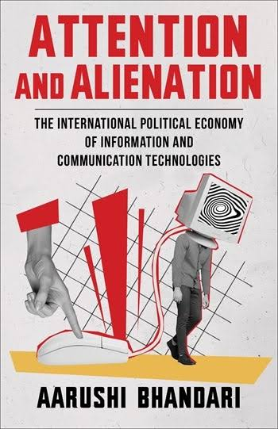

En un océano de producciones académicas en serie, el libro de Aarushi Bhandari exhibe una peculiar rareza. Se trata de un análisis sobre economía política de la atención, una de las zonas más productivas de los estudios de comunicación, pero al mismo tiempo de una autobiografía o, mejor dicho, de una historia personal en relación con internet: desde su etapa como entusiasta ciberoptimista, en 2002, cuando le regalan su primera computadora, hasta estos años en los que fue madurando una crítica radical sin perder las esperanzas de transformación. En esa trayectoria individual se puede leer la historia de las mutaciones no solo tecnológicas sino también políticas y económicas de la red de redes cuya promesa de un mundo feliz devino en este presente de hipervigilancia y alienación.
Intercambios desiguales
La tesis de Bhandari afirma que la economía de la Web 2.0 crea las condiciones para un intercambio desigual: las corporaciones de plataformas capturan atención y devuelven alienación. Cada usuario entrega una unidad de atención que las empresas venden a un tercero. Se trataría de un proceso de acumulación de capital basado en extraer el tiempo, la concentración, el espíritu creativo y la energía emocional del cuerpo humano.
La economía política de la comunicación muy tempranamente colocó a la atención en el centro del análisis del funcionamiento de los medios en el capitalismo. En un trabajo de 1977, Dallas Smythe, uno de los fundadores de este campo de estudios, argumentaba que los medios masivos vendían la atención de los consumidores a los anunciantes. Antes, en América Latina, Ludovico Silva creó el concepto de “plusvalía ideológica” (1970) para explicar esa expropiación del tiempo libre por parte de los medios.
La contribución de Bhandari consiste en volver a la idea marxista de “alienación” para poder pensar en uno de los términos de ese desigual intercambio, aquello que recibe el usuario tras haber entregado su tiempo libre. Si en los Manuscritos económicos y filosóficos la alienación surge en el proceso de la producción, esta otra alienación nacería en el consumo de las redes y plataformas.
En otras palabras, ese consumo abriría un proceso de cosificación donde los sujetos-mercancías se relacionan con otras tantas mercancías: historias, fotos, noticias y otros sujetos-mercancías.
Bhandari suma dos aportes adicionales. Pensar los intercambios desiguales no solo en el plano de las interacciones personales sino en el de los movimientos sociales contrahegemónicos frente al capitalismo y en el de los países subdesarrollados frente a los imperialistas. La economía de la atención —que es la de la expropiación, conversión de unidades de atención en datos y capital, y la alienación de los usuarios— no podría ser cuestionada por los movimientos sociales, incluso los más radicales, cuando intervienen en las plataformas, porque precisamente no pueden salir de la lógica que estas imponen a todos los intercambios. Para hacerlo, como propone al final del libro, es necesario refundar la Web.
Por su parte, el acceso de los países subdesarrollados a las nuevas tecnologías, lejos de integrarlos en alguna vía de modernización o progreso, los encadena a relaciones de desigualdad con los países imperialistas y, hacia el interior de cada uno de ellos, a una mayor desigualdad entre las elites y sus pueblos.
Por eso la autora recusa toda la narrativa sobre las tecnologías de la comunicación y la información para el desarrollo (ICT4D, su sigla en inglés), que prometen
Una historia, la historia
Aarushi Bhandari tenía doce años y vivía en Katmandú, Nepal, en el seno de una acomodada familia brahmana, cuando recibió su primera computadora. Estamos en 2002. Eran los tiempos del dial-up, pero también del reinado despótico de Gyanendra Bir Bikram Shah y del inicio de los movimientos de insurgencia que coronarían en la rebelión popular que terminó imponiendo la república.
En la introducción, en los interludios que separan cada capítulo y en la conclusión, Bhandari reconstruye algunos trazos de su historia personal en relación con internet y es allí donde encontramos lo más interesante de su propuesta.

Aquella adolescente que escribía en la comunidad de fanfiction de Harry Potter encontró en la primera internet la promesa de autonomía y emancipación del estrecho mundo que la circunscribía. Por eso, cuando en 2005 las autoridades impusieron un apagón general de la red para controlar la opinión pública y la creciente rebelión, la joven Bhandari no solo sintió una enorme frustración sino que entendió mejor el estallido popular que finalmente acabaría, un año después, con el reinado para imponer la república.
Más allá de las anécdotas, la historia que nos cuenta Bhandari escande la de internet. Cuando ella comienza a navegar por la red, se había terminado de producir el colapso de las punto.com y emergía entonces algo nuevo: la Web 2.0. Tendrían que pasar algunos años para que se pudiera advertir qué era lo que se estaba gestando en las redes. En 2011, la primavera árabe y el movimiento de los indignados parecían restablecer las esperanzas en las enormes posibilidades emancipadoras que habilitaban las nuevas tecnologías —el celular, sobre todo. Pero tras un acelerado proceso de monopolización de internet, lo que se fue reinventando fue un nuevo modelo de negocios, gobernado por unas pocas plataformas que capturan, procesan y analizan nuestros datos para convertirlos en ganancia.
Su optimismo inicial da paso no al pesimismo, pero sí a una creciente preocupación en torno a las consecuencias que esta economía de la atención deja en los jóvenes. Su experiencia dictando clases en línea en Davidson College, durante los años pandémicos, la volvió sensible al padecimiento de sus estudiantes, afectados por lo que ella define como “una dependencia paralizante de los medios digitales” (166) y a la necesidad de encontrar formas y salidas de bienestar colectivo.
Un programa de intervención
Las salidas que la autora imagina para escapar de la economía de la atención no terminan de cuajar en un programa radical. Si bien plantea la necesidad de construir una tercera vía —la Web 3.0— que se asiente sobre otra lógica y arquitectura y que se constituya a partir de nuevas relaciones sociales, sus propuestas terminan acotadas al espacio casi íntimo de las relaciones interindividuales: buscar formas de sanación, reenfocar la atención, crear espacios de conversación participativa. Iniciativas todas necesarias —hay una población, particularmente la más joven de los sectores más precarizados, muy lastimada, como para dejar las tareas de sanación a los instagramers de autoayuda— pero insuficientes como para revertir una economía de la atención que es la que impone el capitalismo.
El libro de Bhandari, en definitiva, ofrece una mirada aguda y necesaria sobre los mecanismos de extracción de valor en la era digital, anclada en una experiencia personal que se vuelve colectiva. Su análisis de la alienación como contracara de la atención permite comprender las dimensiones subjetivas y estructurales de un sistema que convierte nuestros deseos, miedos y esperanzas en mercancía. Aunque sus propuestas de transformación puedan parecer tímidas frente a la magnitud del problema, su diagnóstico resulta indispensable para cualquier intento serio de repensar la tecnología desde una perspectiva emancipatoria.
Referencias
• Bhandari, A. (2025). Attention and alienation. The international political economy of information and communication technologies. Columbia University Press.
• Smythe, D. (1977). Communications: Blindspot of Western Marxism. Canadian Journal of Political and Social Theory.
• Silva, L. (1970). Plusvalía ideológica. Ediciones de la Biblioteca Central de la Universidad Central de Venezuela.